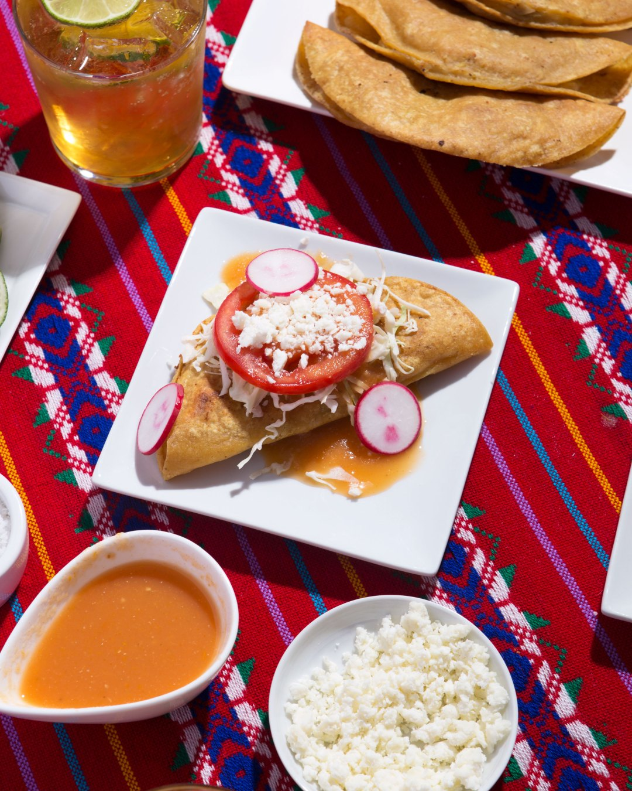

Tacos de Papa

Description
What are tacos de papa?
They consist of a deep fried tortilla shell stuffed with a mashed potato filling and they’re topped with shredded cabbage, sliced tomato, diced onion, heaps of cotija and a garlicky tomato sauce.
These tacos are a good reminder of my grandma, and they instantly transport me back to Comala whenever I have them. If you have the opportunity to make them, I hope you enjoy them as much as I do and I hope they bring you warm memories, just as they do to me.
Ingredients
Taco Filling
- 1 1/2 lbs yukon gold potatoes peeled and cubed
- 5 garlic cloves
- ¾ cup chopped green bell pepper
- 1/2 tsp ground black pepper
- 1 tsp salt
Sauce
- 4 large Roma tomatoes (about 1 lb)
- 1/4 white onion
- 2 garlic cloves
- 1 tomatillo, husked & rinsed
- 3/4 tsp kosher salt
- 1/4 tsp ground black pepper
- 1 1/2 cup vegetable broth
Granish
- corn tortillas
- shredded cabbage or lettuce
- sliced tomato
- cotija or queso quesadilla/li>
- diced white onion
- sliced radishes
Steps
Taco Filling
- Place your potatoes and garlic cloves in a large pot or dutch oven, cover with water by about an inch and bring to a boil over medium heat. Once the water comes to a boil, reduce the heat to medium-low and simmer your potatoes for 15 minutes until they're soft.
- Transfer your potatoes and garlic to a bowl, mash, and season with salt, pepper. Taste for salt and adjust.
Sauce
- In a large pot or dutch oven, add the tomatoes, onion, tomatillo, and the garlic, cover with water by an inch and bring to a simmer.
- Simmer for 10-15 minutes over medium heat so the tomatoes get soft. Strain the vegetables then add to a blender pitcher with the chicken stock (or vegan alt.), salt and pepper and blend until smooth, making sure not to seal the lid completely so your blender doesn't explode.
- Transfer the mixture back into the pot and simmer for 15 minutes on low heat while you fry the tacos.
Tacos
- Heat a couple tablespoons of vegetable oil in a large skillet over medium heat, then working in batches of 3-4, pop your tortillas in the microwave for about a minute. (Cold tortillas will rip) Add 1/4 cup of the mashed potatoes to each tortilla, fold the tortilla over and cook for about 3-4 minutes on each side until crispy and golden brown.
- Garnish with a little shredded cabbage, tomato slices and then pour some of the tomato sauce over each taco. Finish by garnishing with some diced onion, radishes, cotija (or vegan alt.) and your favorite hot sauce or salsa.